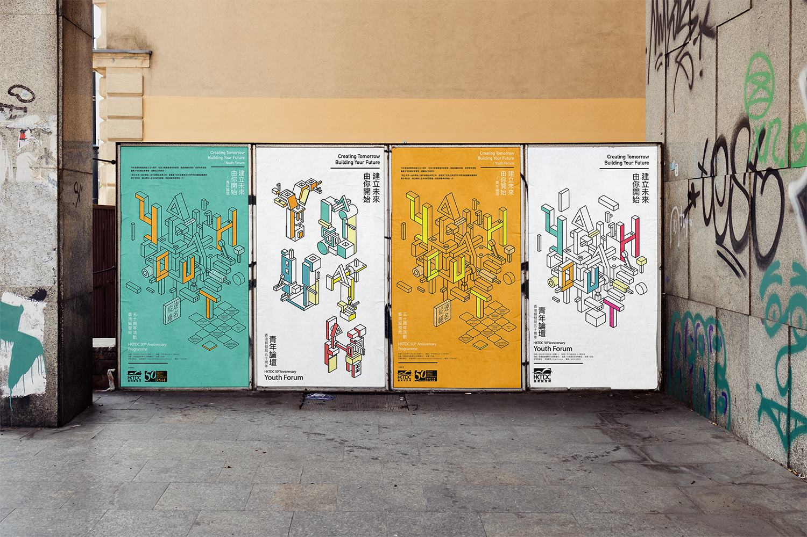
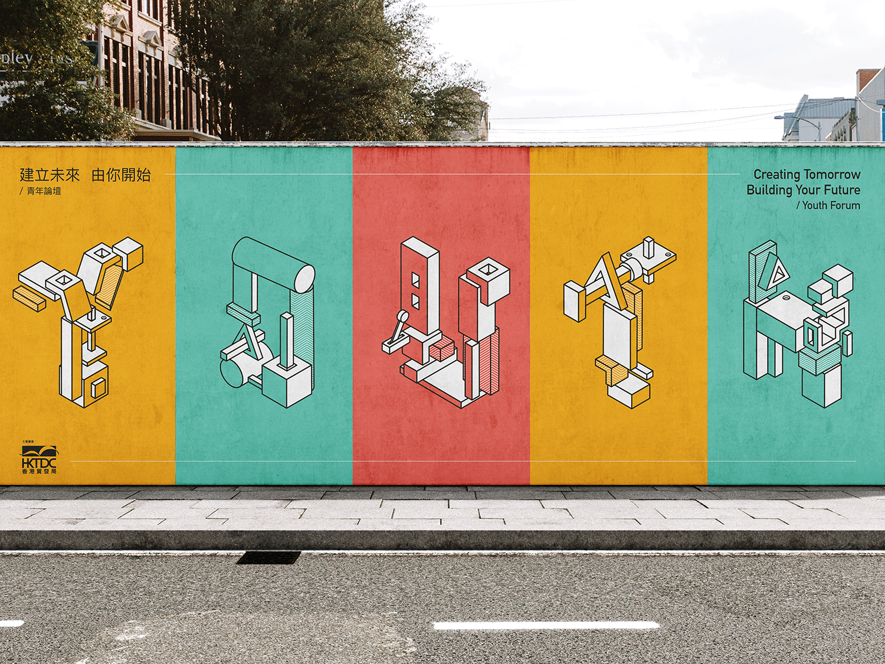

Youth Forum
Graphic Design

OVERVIEW.
The Youth Forum in Hong Kong is an inspiring event designed to connect secondary school students with successful professionals from various industries across the city. The forum serves as a platform for these accomplished individuals to share their personal stories, challenges, and successes, offering valuable insights and inspiration to the younger generation. Through these talks, students gain a deeper understanding of the diverse paths to success, learn about the importance of perseverance, and are encouraged to set and pursue their own goals with confidence. The forum aims to empower students by broadening their perspectives, helping them to envision a bright future and equipping them with the motivation and knowledge to achieve their aspirations.

DESIGN
PROCESS.
The design concept for the Youth Forum revolves around the powerful metaphor of building blocks, symbolizing the stages of growth and development that each student undergoes as they shape their future. Each block represents a critical step in their journey—whether it's gaining knowledge, developing skills, or drawing inspiration from the stories shared by successful professionals. As students piece these blocks together, they begin to see the formation of their unique identity and future aspirations. This visual approach not only highlights the importance of each individual effort but also emphasizes the cumulative impact of these efforts in creating a solid foundation for their future. The building blocks concept beautifully illustrates how, through determination and persistence, students can construct their own path to success, one step at a time, ultimately forming a complete and personalized vision of their future.